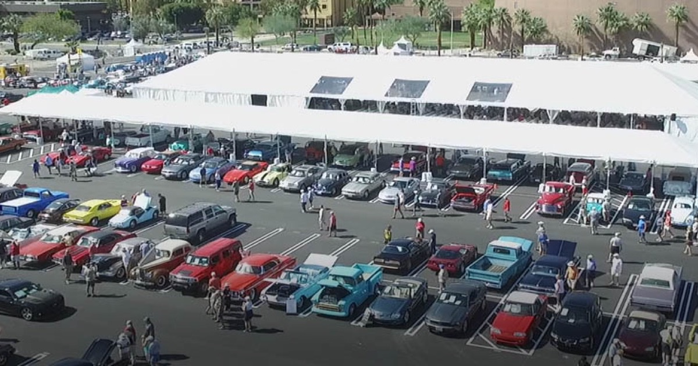
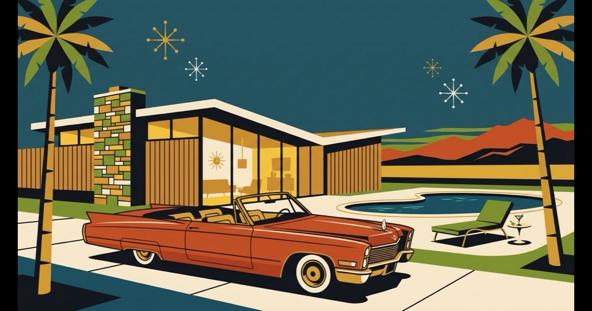

Pick a Direction
Two ways to look at
McCormick's Palm Springs.
Family-owned classic car auctions since 1985. Same brand, same content, two different rooms. Click in.

01 · Editorial
The Editorial Floor
Quiet. Considered.
Catalogue-grade.
Bodoni Moda + champagne ink. Real auction photography. The brand the way a serious collector imagines them: family-owned, built on integrity, never loud.
Bodoni Moda
Ink + Brass
Real Photo
See the build →

02 · Atomic
The Atomic Floor
Sip slow.
Stay late.
Cars on the block.
Shag-style flat vector. Mid-century atomic-age maximalism. Cocktail-party Palm Springs at twilight, with the cars as the centerpiece.
Anton + Cabin✦
6-Color Palette✦
Shag Illustration
See the build →